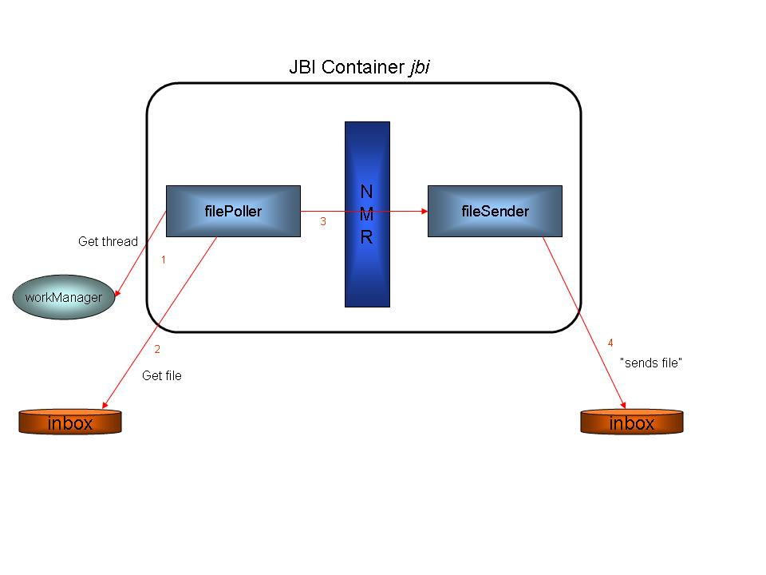

|
|
|
|
|
|
|
Download | JavaDocs |
OverviewCommunityDocumentation
ReferenceFeatures
Integration
ComponentsToolingRelated ProjectsSupportDevelopersTools we use
|
Overview of the ServiceMix 1.x File Binding ExampleThis document describes how to run ServiceMix's File Binding example and provides details about what it does. For information on the business use case, please refer to: Use Case for File Binding The File Binding example illustrates the following:
The XML code for the File Binding example is located in the ServiceMix installation directory under the examples\file-binding directory in the servicemix.xml file. It is recommended that you refer to the servicemix.xml file while reading this document. The File Binding XML file, servicemix.xml, contains two components and a supporting bean. One component waits for a file to be deposited into the the inbox directory, retrieves it, creates a normalized message that contains the file, then sends the message to the Normalized Message Router (NMR). The NMR routes the file to the other component, which deposits it into an outbox directory. The bean provides a thread pool to enhance the performance of the reading and processing of the files. Details about the components and bean are discussed below.
Running the File Binding ExampleFrom a command shell, go to the File Binding example directory: cd [servicemix_install_dir]\examples\file-binding where servicemix_install_dir is the directory in which ServiceMix was installed. Before running the example, copy a test file into the inbox directory: copy test-file.xml inbox Then type: [servicemix_install_dir]\bin\servicemix servicemix.xml OR ..\..\bin\servicemix servicemix.xml
dir [servicemix_install_dir]\examples\file-binding\outbox If you would like to see more files moved from inbox to outbox, copy another file into the inbox directory. The file binding program continually polls (every 1000 ms) for new files, so any new file placed in inbox, will be transmitted to outbox.
Stopping the File Binding ExampleTo terminate the File Binding example type "CTRL-C" in the command shell in which it is running and answer "y" to the "Terminate batch job (y/n)?" question.
How it WorksThe diagram below illustrates the logical flow of the program through the file binding components.
File Binding Logical Flow Diagram 
The logical flow of the program is:
Logging information is written to the console as files are transmitted. Typical output looks like the following:
ServiceMix ESB: 1.0.1 Loading ServiceMix from file: servicemix.xml [INFO] XmlBeanDefinitionReader - -Loading XML bean definitions from file [C:\Program Files\servicemix-1.0.1\examples\file-binding\servicemi.xml] [INFO] FileSystemXmlApplicationContext - -Bean factory for application context [org.springframework.context.support.FileSystemXmlApplication Context;hashCode=7486844]: org.springframework.beans.factory.support.DefaultListableBeanFactory defining beans [workManager,jbi]; root of BeanFactory hierarchy [INFO] FileSystemXmlApplicationContext - -2 beans defined in application context [org.springframework.context.support.FileSystemXmlApplicationContext;hashCode=7486844] [INFO] CollectionFactory - -JDK 1.4+ collections available [INFO] CollectionFactory - -Commons Collections 3.x available [INFO] FileSystemXmlApplicationContext - -Unable to locate MessageSource with name 'messageSource': using default [org.springframework.conte xt.support.DelegatingMessageSource@1d6776d] [INFO] FileSystemXmlApplicationContext - -Unable to locate ApplicationEventMulticaster with name 'applicationEventMulticaster': using defaul t [org.springframework.context.event.SimpleApplicationEventMulticaster@4fce71] [INFO] DefaultListableBeanFactory - -Pre-instantiating singletons in factory [org.springframework.beans.factory.support.DefaultListableBeanF actory defining beans [workManager,jbi]; root of BeanFactory hierarchy] [INFO] DefaultListableBeanFactory - -Creating shared instance of singleton bean 'workManager' [INFO] DefaultListableBeanFactory - -Creating shared instance of singleton bean 'jbi' Created MBeanServer with ID: 203c31:106bd250a5b:-7fff:Lisas:1 [INFO] SpringInitialContextFactory - -Loading JNDI context from: class path resource [jndi.xml] [INFO] XmlBeanDefinitionReader - -Loading XML bean definitions from class path resource [jndi.xml] [INFO] XmlBeanFactory - -Creating shared instance of singleton bean 'jndi' RMIConnectorServer started at: service:jmx:rmi://lisas/jndi/rmi://localhost:1099/defaultJBIJMX [INFO] JBIContainer - -ServiceMix JBI Container (http://servicemix.org/) name: defaultJBI running version: ServiceMix. [INFO] JBIContainer - -Activating component for: [container=defaultJBI,name=fileSender,id=fileSender] with service: fileSender component: org.servicemix.components.file.FileWriter@b1cc87 [INFO] ComponentContextImpl - -Component: fileSender activated endpoint: fileSender : fileSender [INFO] JBIContainer - -Activating component for: [container=defaultJBI,name=filePoller,id=filePoller] with service: filePoller component: or g.servicemix.components.file.FilePoller@183e7de [INFO] ComponentContextImpl - -Component: filePoller activated endpoint: filePoller : filePoller [INFO] DeliveryChannel - -default destination serviceName for filePoller = fileSender Note: In the servicemix.xml file, the "destinationService" attribute of the filePoller component is "foo:fileSender." The last line of output (above) shows the NMR using that to deliver the normalized message to fileSender. DetailsThe following table provides more details about the function of each component and bean in the servicemix.xml file.
Useful Code HintsThis section describes the start-up sequence and how the ServiceMix container interacts with the File Binding application. The Java class files are located in the servicemix-1.0.1.jar file in the ServiceMix installation directory. To look at the Java source code, unjar and decompile the .class files or download Viewing the Java source code is recommended for understanding the information in this section. filePoller Details
Eventually, one of the threads that is polling (see step G) for a file in the inbox directory will see a one. It will use workManager's thread pool to get a thread for processing the file. Processing the file consists of streaming it from inbox, creating a normalized message, and sending the message to the NMR. PollingComponentSupport.java timerTask = new TimerTask() { public void run() { try { getWorkManager().scheduleWork(PollingComponentSupport.this); } catch (Throwable e) { log.error("Failed to schedule work: " + e, e); } } }; if (firstTime != null) { timer.scheduleAtFixedRate(timerTask, firstTime, period); } else { timer.scheduleAtFixedRate(timerTask, delay, period); } } super.start(); workManager Details workManager is a property of the FilePoller object. This property is defined by a local reference, the "ref" attribute in the servicemix.xml file. The local reference is a bean which instantiates org.activemq.work.SpringWorkManager. The SpringWorkManager is a Spring bean. By default when a Spring bean starts, the properties are set, and then the afterPropertiesSet() method is called by the container. The workManager is used to allocate threads. The FilePoller asks for threads from the workManager for two operations:
Summarizing, when the ServiceMix container instantiates an MBean it firsts sets the property values if there are any, then calls the init() method of the class and its' parent classes, if applicable. Then it calls the start() method of the class. When a Spring bean starts up, the properties are set and then the afterPropertiesSet() method is called. Related DocumentationFor more information on the following topics please see: |